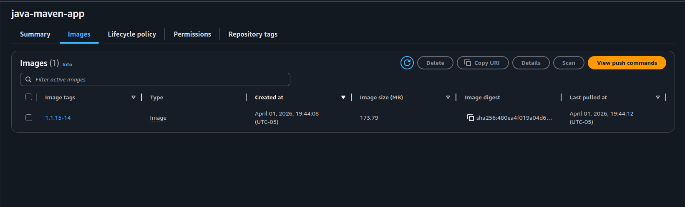

This module built directly on top of the CI/CD pipeline I'd been developing across previous projects. Before getting to the main demos, I worked through several earlier exercises in the EKS module:
- Create an AWS EKS cluster with a Node Group
- Create an EKS cluster with a Fargate profile
- Create an EKS cluster with
eksctl - CD — Deploy to EKS cluster from Jenkins Pipeline
- CD — Deploy to LKE cluster from Jenkins Pipeline
By the time I got to the two main demos — Complete CI/CD Pipeline with EKS and private DockerHub registry and Complete CI/CD Pipeline with EKS and AWS ECR — I had a working EKS cluster and a Jenkins pipeline that could build and push images. What I didn't have was a deploy stage that actually did anything. That's what this project was about.
What I had going in: a Jenkins pipeline with version incrementing, Maven build, Docker build and push, and a git commit of the version bump — with an empty deploy stage. What this project added: dynamic Kubernetes manifests, the full Jenkins-to-EKS deployment loop, and a real understanding of what breaks when you try to wire all of it together at once. I'll walk through it in two parts — first getting it working with Docker Hub, then swapping in ECR.
Understanding What the Pipeline Is Actually Doing
Before getting into the implementation, it's worth being explicit about the full pipeline flow, because each stage sets up the next and the ordering matters.
Stage 1 — Increment version: Reads the current version from pom.xml, bumps the incremental version using the Maven Build Helper plugin, and sets an IMAGE_NAME environment variable combining that version with the Jenkins build number (e.g. 1.1.12-6). Every downstream stage that references $IMAGE_NAME is using what was set here.
Stage 2 — Build app: Runs mvn clean package to compile the Java source and produce a .jar in the target/ directory. The Dockerfile expects that jar to exist — if this stage doesn't run first, the Docker build fails.
Stage 3 — Build image: Builds the Docker image tagged with $IMAGE_NAME, logs into the registry, and pushes. At the end of this stage, the image exists in the registry and is ready to be pulled by the cluster.
Stage 4 — Deploy: Uses AWS credentials to authenticate with EKS, runs envsubst to substitute $IMAGE_NAME and $APP_NAME into the Kubernetes manifests, and applies them to the cluster. This is the stage that was empty before this project.
Stage 5 — Commit version update: Commits the updated pom.xml back to GitLab so the next pipeline run starts from the incremented version. This stage running last matters — if it ran before the deploy and the deploy failed, you'd have committed a version bump for a build that never actually deployed.
The key thing this ordering enforces: you never deploy an image that wasn't built in the same pipeline run, and you never commit a version bump for a build that failed. Each stage is a checkpoint.
Part 1: Wiring Up the Deploy Stage
The deploy stage up to this point just echoed a placeholder string. The goal now was to have Jenkins actually apply Kubernetes manifests to the EKS cluster after pushing the image. That meant two things: creating the Kubernetes config files, and figuring out how to pass a dynamic image name into them at pipeline runtime.
I created a kubernetes/ directory in the repo with a deployment.yaml and service.yaml. The skeleton was straightforward — a Deployment managing replicas and a ClusterIP Service. The problem was the image field. Every pipeline run generates a new version tag. Hard-coding it was never an option.
The Image Name Problem and envsubst
The solution is envsubst — a utility that takes a file, scans it for $VARIABLE syntax, substitutes them with matching environment variables from the current shell context, and outputs the result to stdout. The file on disk never changes. In the Jenkinsfile deploy stage:
sh 'envsubst < kubernetes/deployment.yaml | kubectl apply -f -'
sh 'envsubst < kubernetes/service.yaml | kubectl apply -f -'The substituted output gets piped straight to kubectl apply. No temp files, no file mutation. The image field in deployment.yaml just holds a variable reference:
image: nvastola/demo-app:$IMAGE_NAMEIMAGE_NAME is already set earlier in the pipeline during the version increment stage. I also pulled the app name into a variable so I wasn't repeating the string across the manifest in multiple places. The full environment block in the deploy stage:
environment {
AWS_ACCESS_KEY_ID = credentials('jenkins_aws_access_key_id')
AWS_SECRET_ACCESS_KEY = credentials('jenkins-aws_secret_access_key')
APP_NAME = 'java-maven-app'
}- sed: Does in-place substitution but mutates the file on disk. Every pipeline run leaves a modified file in the workspace — you'd need to reset it, gitignore it, or deal with the diff noise. Not clean for a versioned config file.
- Helm: Handles dynamic values well and adds packaging, rollback, and release management. The right answer for a team managing multiple services in production. More scaffolding than a two-manifest demo requires.
- envsubst: Reads the file, substitutes
$VARIABLEreferences, outputs to stdout. File on disk never touched. One line in the Jenkinsfile per manifest. Exactly the right level of complexity for this use case.
envsubst isn't installed in Jenkins out of the box. You have to add it manually inside the container:
docker exec -u 0 -it jenkins bash
apt-get install gettext-baseRunning envsubst with no arguments after installing just hangs waiting for stdin — that's expected. As long as it doesn't throw an error, you're good.
Giving the Cluster Access to Docker Hub
The Docker Hub repo is private, so the EKS cluster needs credentials to pull from it. This is a one-time operation — not something that belongs in the pipeline since the pipeline runs every time. You create a docker-registry type secret directly in the cluster:
kubectl create secret docker-registry my-registry-key \
--docker-server=docker.io \
--docker-username=nvastola \
--docker-password=<password>The secret gets stored in Kubernetes and referenced by name in the deployment spec — the cluster handles authentication automatically every time a Pod starts and needs to pull the image. This pattern is registry-agnostic: Docker Hub, ECR, GCR all use the same docker-registry secret type. Only the server URL changes.
spec:
imagePullSecrets:
- name: my-registry-key
containers:
- name: $APP_NAME
image: nvastola/demo-app:$IMAGE_NAME
imagePullPolicy: Always
ports:
- containerPort: 8080imagePullPolicy: Always ensures Kubernetes fetches the image on every Pod start regardless of whether a previous version already exists on the node. For a pipeline that's generating a new tag every run, this matters.
Five Failures Before It Worked
I want to be honest about how this went. The pipeline ran six times before it succeeded. Each failure was a different layer of the setup I hadn't completed. In order:
Build 1: Docker Not Found
/var/jenkins_home/workspace/.../script.sh: docker: not found — Jenkins could execute the pipeline script, but Docker CLI wasn't installed inside the container.
Dropped into the container as root and installed it: apt-get install docker.io.
Build 2: Socket Not Mounted
Cannot connect to the Docker daemon at unix:///var/run/docker.sock. Is the docker daemon running? — Docker CLI was there, but /var/run/docker.sock from the host wasn't mounted into the container, so it had no daemon to talk to.
Had to recreate the Jenkins container with the socket mounted. You can't add a volume to a running container — stop, remove, recreate:
docker run -d -p 8080:8080 -p 50000:50000 \
-v jenkins_home:/var/jenkins_home \
-v /var/run/docker.sock:/var/run/docker.sock \
--name jenkins jenkins/jenkins:ltsBecause I had jenkins_home on a named volume, all my credentials and job configs survived the recreation. This was not an accident — I'd made sure to use a named volume from the start of this module after learning that lesson the hard way in an earlier demo.
When standing up a Jenkins container for Docker builds, mount the socket and install the CLI before running anything else. Skipping either one will cost you builds. And if you forget the socket mount, you're recreating the container regardless — do it right the first time.
Build 3: Socket Permission Denied
permission denied while trying to connect to the Docker daemon socket at unix:///var/run/docker.sock — the socket was mounted and reachable, but the jenkins user didn't have permission to use it.
This one took longer than it should have. I added Jenkins to the docker group inside the container — which didn't work. The reason: the kernel doesn't check group names, it checks GID numbers. The docker group inside the container had a different GID than the one owning the socket on the host.
Running stat -c '%g' /var/run/docker.sock on the host showed GID 112. The group inside the container had a different number entirely. The fix was aligning the GID:
docker exec -u root jenkins groupmod -g 112 docker
docker restart jenkinsWhen you see a socket permission error after mounting /var/run/docker.sock, don't just add the user to a group called "docker" and call it done. Check what GID the socket actually has on the host with stat -c '%g' /var/run/docker.sock, then make sure the group inside the container matches that number. The name is irrelevant — the kernel only sees the GID.
Build 4: Git Identity Unknown
Author identity unknown — Please tell me who you are. — The pipeline reached the commit version update stage for the first time, and git refused to commit because no identity was configured inside the Jenkins container.
docker exec -u jenkins jenkins git config --global user.email "ci@jenkins"
docker exec -u jenkins jenkins git config --global user.name "Jenkins"Build 5: GitLab Access Denied
remote: HTTP Basic: Access denied. on git push — the GitLab credential stored in Jenkins had either expired or didn't have the right scope.
Regenerated a GitLab personal access token with write_repository scope and updated the credential in Jenkins UI.
Build 6 succeeded. Five failures, five different layers — CLI, socket mount, socket permissions, git identity, git credentials. None of them were related to the actual Kubernetes deployment logic. That's how it goes when you're standing up infrastructure from scratch: the pipeline doesn't break on the interesting stuff first. It breaks on the prerequisite you forgot to finish.
The Pods Were Pending — And It Wasn't the Deployment
After the first successful build I ran kubectl get pods expecting to see my app running. Instead, everything was stuck on Pending. The describe output said:
Warning FailedScheduling default-scheduler 0/2 nodes are available: 2 Too many pods.My EKS cluster was using t3.micro nodes. AWS caps the number of pods per node based on ENI and IP address limits — on a t3.micro, that ceiling is 4 pods. The kube-system pods (CoreDNS ×2, aws-node ×2, kube-proxy ×2, metrics-server ×2) were already consuming all 4 slots on each of my 2 nodes before my app pod had any chance of being scheduled.
You can see exactly how tight things are with:
kubectl describe nodes | grep -E "Non-terminated Pods|pods"In my case it came back showing 4 pods running and a limit of 4 on each node. No room. Adding a third node freed up 4 more slots and the pod scheduled immediately.
AWS calculates max pods per node using the formula: (ENIs × (IPs per ENI - 1)) + 2. Every Pod needs an IP address, and each instance type supports a fixed number of network interfaces with a fixed number of IPs each. This is a hard ceiling — not a resource quota you can configure away.
- t3.micro: 4 pods max
- t3.small: 11 pods max
- t3.medium: 17 pods max
- t3.large: 35 pods max
The kube-system pods alone fill a t3.micro cluster entirely before you deploy a single application pod. Always check the AWS ENI max pods table before sizing a cluster.
For anyone hitting this: it's not your deployment, it's your instance type. The cost difference between micro and small is negligible. The operational friction difference is not.
Part 2: Replacing Docker Hub with AWS ECR
With the full pipeline working against Docker Hub, the second half of this demo swaps in ECR as the registry. The steps follow the same pattern — create a registry, create credentials, create a pull secret in the cluster, update the Jenkinsfile — but the specifics are different enough to be worth walking through.
The reason you'd use ECR over Docker Hub in a real AWS environment comes down to three things. First, ECR gives you unlimited private repositories — Docker Hub's free tier limits you to one, which doesn't scale when you're running multiple services. Second, ECR integrates directly with IAM, meaning you can give your EKS nodes pull permissions through IAM roles instead of storing static credentials anywhere. Third, images stay inside your AWS account and VPC — they never leave the AWS network on the way to your cluster, which matters for both latency and compliance.
Create the ECR Repository
AWS Console → ECR → Create repository → Private → name it (I used java-maven-app) → keep defaults → create. Once it exists, the "View push commands" button gives you the exact login command for your account and region:
aws ecr get-login-password --region us-east-2 | \
docker login --username AWS --password-stdin \
<account-id>.dkr.ecr.us-east-2.amazonaws.comCreate Credentials in Jenkins
ECR's username is always literally AWS. The password is a token you generate on demand:
aws ecr get-login-password --region us-east-2Run that locally, copy the output, and create a username/password credential in Jenkins with ID ecr-credentials. Unlike Docker Hub, you also have to specify the server URL explicitly when logging in — Docker Hub is the assumed default, ECR is not.
Update the Jenkinsfile
The ECR repo URL is long and shows up in multiple places — the build tag, push command, and docker login. Rather than repeat it or risk a typo, extract it into environment variables at the top of the pipeline:
environment {
DOCKER_REPO_SERVER = "<account-id>.dkr.ecr.us-east-2.amazonaws.com"
DOCKER_REPO = "${DOCKER_REPO_SERVER}/java-maven-app"
}The build image stage then becomes:
withCredentials([usernamePassword(credentialsId: 'ecr-credentials', passwordVariable: 'PASS', usernameVariable: 'USER')]) {
sh "docker build -t ${DOCKER_REPO}:${IMAGE_NAME} ."
sh "echo $PASS | docker login -u $USER --password-stdin ${DOCKER_REPO_SERVER}"
sh "docker push ${DOCKER_REPO}:${IMAGE_NAME}"
}And the image field in deployment.yaml updates to reference $DOCKER_REPO:
image: $DOCKER_REPO:$IMAGE_NAMEIf you need to change the repo URL later, it's one variable instead of four hardcoded strings.
Create the ECR Pull Secret
Same concept as the Docker Hub secret — the cluster needs credentials to pull from a private registry. Identical structure, just pointed at ECR:
kubectl create secret docker-registry aws-registry-key \
--docker-server=<account-id>.dkr.ecr.us-east-2.amazonaws.com \
--docker-username=AWS \
--docker-password=$(aws ecr get-login-password --region us-east-2)Update imagePullSecrets in deployment.yaml to reference aws-registry-key and the cluster is ready to pull from ECR.
Verifying It All Worked
Committed the changes, pushed, and the webhook triggered the pipeline automatically. After a successful build, three things confirmed the whole chain was working:
- ECR had the new image — visible in the AWS console with the version tag generated during that specific pipeline run.

- Pods were running —
kubectl get podsshowed thejava-maven-apppods in Running state, not Pending. - Image source confirmed —
kubectl describe pod <pod-name>showed the full ECR URL in the image field with the dynamically substituted version tag. That's the check that actually matters. It's easy to see pods running and assume everything is fine. Seeing the exact ECR URL with the correct version tag in the pod description is proof thatenvsubstdid its job, the right image was pushed, and Kubernetes pulled from the right place. Extremely satisfying after five failed builds to finally see it all connected.
What I Learned
1. Pipelines Break on the Prerequisites, Not the Logic
Five of the six failures had nothing to do with Kubernetes or the deploy stage. Missing CLI, missing socket mount, GID mismatch, missing git identity, expired token — each one blocked the pipeline before it could reach anything interesting. When you're standing up infrastructure from scratch, expect this. The only way through is methodically completing each layer before assuming the next one will work.
2. Linux Permissions Care About Numbers, Not Names
The GID mismatch on the Docker socket was the most counterintuitive failure. Jenkins was in a group called docker. The socket was owned by a group also called docker. Still denied — because the GIDs didn't match. The kernel doesn't resolve group names, it compares numbers. This is the kind of thing that's not obvious until you've been burned by it.
3. EKS Pod Limits Are a Networking Constraint, Not a Resource One
The t3.micro ceiling isn't a quota you can raise with a config change — it's derived from the number of ENIs AWS can attach to that instance type and the IPs available on each. Knowing this before sizing a cluster would have saved me a debugging cycle. Check the documented limits before you provision.
4. envsubst Is the Right Tool for Dynamic Manifests
Pass the file in, get a substituted version out, pipe it to kubectl. The original file stays untouched. One line per manifest. It does exactly one thing and does it cleanly. For a two-manifest deploy stage, it's the right level of complexity — not sed, not Helm.
Production Considerations
ECR token expiry. The ECR login token expires after 12 hours. The static credential stored in Jenkins will eventually stop working. In a real environment you'd handle this with IRSA (IAM Roles for Service Accounts) so the cluster nodes can pull from ECR using IAM permissions directly — no static credentials, no expiry problem.
Namespace isolation. Everything here ran in the default namespace. In practice you'd have separate namespaces per environment with RBAC scoped accordingly. Default is fine for getting something working; it's not where production workloads should live.
Instance sizing. The t3.micro pod ceiling is a real operational constraint, not just a demo inconvenience. Even for a development cluster, starting on t3.small gives you enough headroom to actually run something without fighting the scheduler. The cost difference is negligible; the operational friction difference is not.
No resource requests or limits. The Deployment in this project didn't define resource requests or limits. In a real cluster that means one misbehaving pod can starve everything else on the node. The previous project covered how to size these — they should be in every Deployment.
Reflection
What this project was: The one where individual tools became a system. I'd built each piece of this pipeline in isolation across earlier projects. This demo forced them to actually hand off to each other — git push triggers Jenkins, Jenkins increments the version, builds the image, pushes to ECR, substitutes the image name into the manifest, applies it to the cluster. Nothing manual after the push.
What worked: Having jenkins_home on a named volume from the start. When I had to recreate the container to add the socket mount, I kept every credential and job configuration I'd set up in the UI. If I hadn't done that, Build 2 would have cost me a lot more than just one failed run.
What I'd do differently: Complete the full container setup — socket mount, Docker CLI, GID alignment, git identity — before running the pipeline at all. I knew these steps were needed and still ran the pipeline before finishing them. Not a catastrophic mistake, but a pattern worth breaking.
Cost: DigitalOcean droplet for Jenkins + EKS cluster (two t3.micro nodes, then three to clear the pod ceiling). Cluster was deleted after the project.
What's Next
With the full Jenkins-to-EKS pipeline working, the next module moves into Terraform. The cluster I've been provisioning manually throughout these demos — node groups, VPC, IAM roles — is going to start getting defined as code. The goal is infrastructure that's reproducible, version-controlled, and not dependent on remembering which console buttons I clicked.